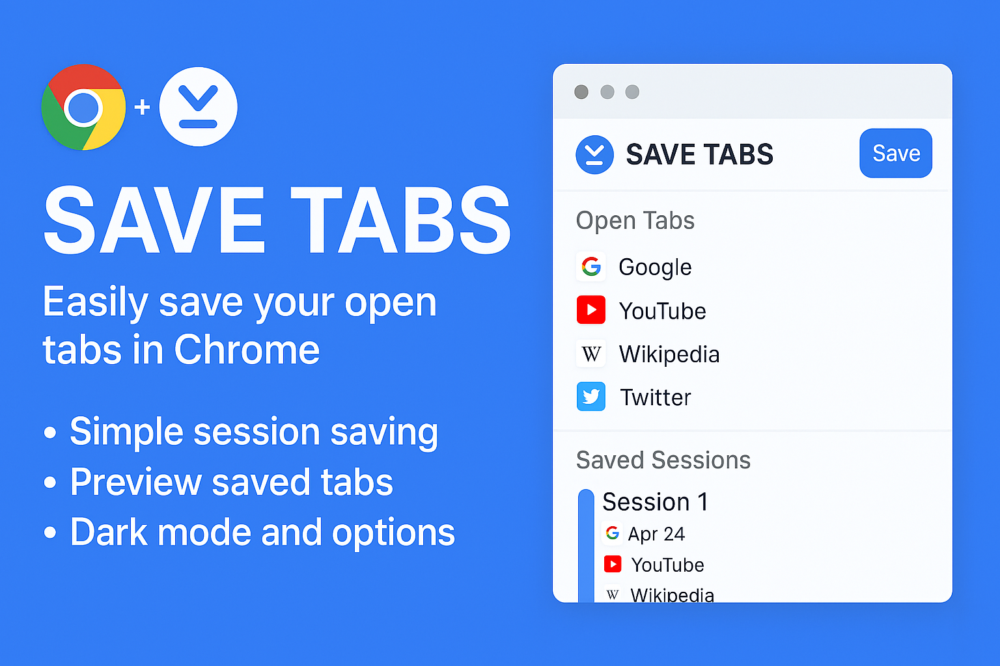

One-click session save
Save all open Chrome tabs and windows without bookmark clutter.
Free Chrome extension - v7.14.0
One click captures your Chrome workspace. Come back later and reopen the exact tabs, windows, and groups you need.

Why install it
Built for research, admin tasks, study sessions, project switching, and every day you end with too many tabs open.
Save all open Chrome tabs and windows without bookmark clutter.
Find sessions by name, tab title, URL, or domain.
Open a session preview and restore only what matters.
Export and import sessions as JSON whenever you want.
The extension itself
The screenshot is shown as-is, so visitors see the real product: open tabs, saved sessions, preview behavior, and the main Save action.
For everyday users
Save now. Restore later. Keep the workflow moving.
Install freeFor technical users
Permissions, storage, restore logic, Cloud Sync, and privacy details.
Technical details